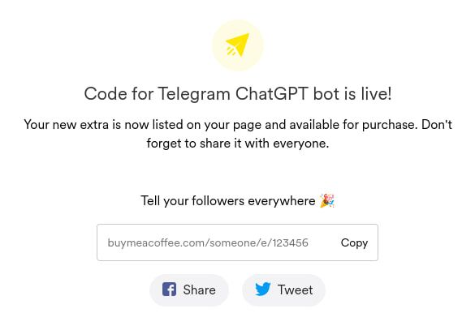
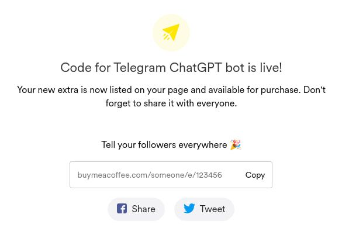

Table of contents
Why do you want it?
Are you looking for an easy and profitable way to earn money online? Look no further than creating a Telegram bot with ChatGPT! This powerful tool allows you to create your own chatbot that can engage with users and provide valuable information. In this guide, we'll walk you through the process of creating a Telegram bot with ChatGPT and show you how to monetize it. Introduction Before we get started, let's go over what a Telegram bot is and why they're so popular. A Telegram bot is an automated program that can interact with users on the Telegram messaging app. These bots can be used for a variety of purposes, such as customer service, news alerts, or even entertainment.
ChatGPT is a language model that can generate human-like responses to natural language queries. By combining ChatGPT with a Telegram bot, you can create a chatbot that can answer questions and provide information to users.
Brief description
In this article we want to create a simple bot that works on Cloudflare workers and handles users messages with ChatGPT. Firstly we will create all necessary accounts. We will write our code in JavaScript following rules of Wrangler (CLI for Cloudflare Workers), Telegram bot API and OpenAI API. We deploy our code to Cloudflare and open a domain that will be attached to our worker. It triggers a request to Telegram to set the domain as handler for user requests to the bot. Also it send bot commands that will be available for users. Finally we'll be able to use our bot.
The picture below shows a general description of the process:

Initial setup
First of all you need to set up a Telegram bot account, create an OpenAI account and a Cloudflare account. To do this, follow these steps:
-
Open the main bot responsible for bot creation:
BotFather. Start a chat with
the BotFather and follow the instructions to create a new bot
account. Once you've created the bot account, you'll be given a
token. It looks like this:
6079022061:AAFWgW7O2_2Hxp-Bk7Q3TgFf_ie3aectUfc. Keep this token safe and in secret, as you'll need it to connect your bot to ChatGPT. Next click on the bot link in the beginning of a BotFather message and press start button. Send any message to that chat. Now you can receive a chat ID for interacting in that chat. Open this link in a browser (replace <TOKEN> with your bot token):https://api.telegram.org/botCopy chat ID from the result. It looks like:/getUpdates 1015004128 -
The next step is to set up ChatGPT. Go to the OpenAI platform
and sign up for an account. Once you've signed up, create a new API key. It looks like this:
sk-czw4SSZP2JoDGUoq9VqeW3BlbxFJmxIm3RMOk19BLjgFmbXV. Save this token in a secret place. - Create a new Cloudflare account. Go to the Cloudflare site and sign up for an account.
Development
You can use template code: Chat bot
Do not use _ (underscore) in the name in wrangler.toml. Cloudflare has some differences in SSL certificates for such subdomains. So there is a chance that telegram bot will not work with this name.
Now that you've set up both your
Telegram bot account and ChatGPT, it's time to connect them.
Firstly you need to install Node.js.
The major version in this guide is 18. With Node.js installation you will get NPM.
Install a CLI for workers from the command line interface:
npm install -g wrangler
Create a new folder somewhere in your system. We name it chat-bot.
Open your folder and initialize your project:
npx wrangler init .
You will see questions about this project. Answer the questions so as
not to deviate from our guide:
> No package.json found. Would you like to create one? yes
Replace wrangler.toml content. Fill
> Would you like to use TypeScript? no
> Would you like to create a Worker at src/index.js? yes
> Would you like us to write your first test TypeScript? no
TG_BOT_TOKEN, OPEN_AI_TOKEN and
CHAT_ID regarding above information from the Initial setup section:
name = "chatbot"
main = "src/index.js"
# date depends on a wrangler version. It's probable will be a date of your work with code
compatibility_date = "2023-03-28"
send_metrics = false
[vars]
TG_BOT_TOKEN = ""
OPEN_AI_TOKEN = ""
CHAT_ID = ""
Open package.json file and change a start script to
"start": "wrangler dev --local",
Start your worker with a command:
npm run start
Open http://127.0.0.1:8787 in your browser. You should see the message:
"Hello World!".
Now we can start to write a new code for our bot. First of all let's create different files for different sources and actions. Create these files inside of the src folder:
- constants.js
- telegram.js
- openai.js
 Let's fill our constants.js file:
Let's fill our constants.js file:
export const TELEGRAM_API_DOMAIN = "https://api.telegram.org";
export const OPENAI_API_DOMAIN = "https://api.openai.com";
Now put code for Telegram. For now it's only for sending our messages through Telegram API:
const send = async (message, token, context) => {
return await fetch(`${TELEGRAM_API_DOMAIN}/bot${token}/sendMessage`, {
method: "POST",
headers: {
"Content-Type": "application/json",
},
body: JSON.stringify({
...context,
text: message,
}),
});
};
export const sendMessage = async (message, botToken, chatContext) => {
if (message.length <= 4096) {
return await send(message, botToken, chatContext);
}
const limit = 4000;
for (let i = 0; i < message.length; i += limit) {
const msg = message.slice(i, i + limit);
await send(`<pre>\n${msg}\n</pre>`, botToken, chatContext);
}
return new Response("MESSAGE BATCH SEND", { status: 200 });
};
Finally replace code in index.js with this code.
We'll just send some message to our bot to check if it works:
import { sendMessage } from "./telegram";
const getChatContext = (env) => {
const { CHAT_ID } = env;
return {
chat_id: Number(CHAT_ID),
reply_to_message_id: null,
parse_mode: "HTML",
};
};
export default {
/* We're able to access our wrangler.toml variables with a env parameter */
async fetch(request, env) {
const { TG_BOT_TOKEN } = env;
const chatContext = getChatContext(env);
await sendMessage("It works", TG_BOT_TOKEN, chatContext);
return new Response("yep", { status: 200 });
},
};
Now start your bot (or reload the local page) and check the results.
You should receive a message "It works" in that chat with your bot.
At this point you can send messages to the bot when making requests to
worker URL.
Let's move on and connect ChatGPT with our bot. So we need to handle user messages and send it to OpenAI API. And after receiving a response send it back to the chat. Firstly to receive user messages we need to tell Telegram our worker URL. So Telegram will know where we can handle all the messages. Add this code in the end of telegram.js:
const bindTelegramWebHook = async (token, url) => {
return await fetch(`${TELEGRAM_API_DOMAIN}/bot${token}/setWebhook`, {
method: "POST",
headers: {
"Content-Type": "application/json",
},
body: JSON.stringify({
url,
}),
}).then((res) => res.json());
};
const checkIsWebhookSet = async (token) => {
try {
const response = await fetch(
`${TELEGRAM_API_DOMAIN}/bot${token}/getWebhookInfo`
).then((res) => res.json());
return !!response?.result?.url;
} catch (error) {
console.log(error);
return false;
}
};
export const setupBot = async (request, botToken) => {
const domain = new URL(request.url).host;
const url = `https://${domain}/telegram/${botToken}/webhook`;
const isWebhookSet = await checkIsWebhookSet(botToken);
if (!isWebhookSet) {
await bindTelegramWebHook(botToken, url);
}
};
Add this code to openai.js. Here we just send a user message to OpenAI API
according to their rules:
import { OPENAI_API_DOMAIN } from "./constants";
const requestCompletionsFromChatGPT = async (message, apiToken) => {
const body = {
model: "gpt-3.5-turbo",
messages: [
/* here should be history of the previous messages */
{
role: "user",
content: message,
},
],
};
const resp = await fetch(`${OPENAI_API_DOMAIN}/v1/chat/completions`, {
method: "POST",
headers: {
"Content-Type": "application/json",
Authorization: `Bearer ${apiToken}`,
},
body: JSON.stringify(body),
}).then((res) => res.json());
if (resp.error?.message) {
throw new Error(
`OpenAI API error\n> ${resp.error.message}\n Prameters: ${JSON.stringify(
body
)}`
);
}
return resp.choices[0].message.content;
};
export const msgChatWithOpenAI = async (message, apiToken) => {
try {
return await requestCompletionsFromChatGPT(message, apiToken);
} catch (error) {
return error;
}
};
Finally replace index.js content with this code. Here we get
an unprocessed request. Check if the URL is ours and if the request contains the user's message. If
everything is fine, we are sending the 1st request to OpenAI. If we receive an answer,
we will send a 2nd request sending this answer as a response to the Telegram API:
import { sendMessage, setupBot } from "./telegram";
import { msgChatWithOpenAI } from "./openai";
const getChatContext = (env) => {
const { CHAT_ID } = env;
return {
chat_id: Number(CHAT_ID),
reply_to_message_id: null,
parse_mode: "HTML",
};
};
const extractUserMessage = async (request) => {
try {
const raw = await request.json();
return raw?.message?.text;
} catch (error) {
throw error;
}
};
const requestToOpenAI = async ({ request, openAiToken }) => {
try {
const message = await extractUserMessage(request);
if (!message) return null;
return await msgChatWithOpenAI(message, openAiToken);
} catch (error) {
console.error(error);
return new Response(
JSON.stringify({
message: error.message,
stack: error.stack,
}),
{ status: 200 }
);
}
};
const handleRequest = async (params) => {
const { request, chatContext, botToken } = params;
const { pathname } = new URL(request.url);
try {
if (pathname === `/telegram/${botToken}/webhook`) {
const response = await requestToOpenAI(params);
if (response) {
await sendMessage(response, botToken, chatContext);
} else if (response instanceof Error) {
await sendMessage("Cannot process your request", botToken, chatContext);
}
}
return null;
} catch (error) {
console.error(error);
return new Response(
`
<h2>Something went wrong</h2>
<p>Error: ${JSON.stringify({
message: error.message,
stack: error.stack,
})}</p>
`,
{
status: 500,
headers: { "Content-Type": "text/html" },
}
);
}
};
export default {
async fetch(request, env) {
const { TG_BOT_TOKEN, OPEN_AI_TOKEN } = env;
const chatContext = getChatContext(env);
await setupBot(request, TG_BOT_TOKEN);
const response = await handleRequest({
request,
chatContext,
botToken: TG_BOT_TOKEN,
openAiToken: OPEN_AI_TOKEN,
});
return response || new Response("yep", { status: 200 });
},
};
You can open your bot and try to ask something. After a few seconds
you should see an answer that ChatGPT is generated for you.
Now we need to fix a chat id, because we set a specific value. Even if someone else is trying to use it the bot will send it to our current chat. For that replace code for sending messages in telegram.js:
// Now instead of context we use chatId parameter
const send = async (message, token, chatId) => {
return await fetch(`${TELEGRAM_API_DOMAIN}/bot${token}/sendMessage`, {
method: "POST",
headers: {
"Content-Type": "application/json",
},
body: JSON.stringify({
// Set all context values here
chat_id: chatId,
reply_to_message_id: null,
parse_mode: "HTML",
text: message,
}),
});
};
// Also replace context with chatId in this function
export const sendMessage = async (message, botToken, chatId) => {
if (message.length <= 4096) {
return await send(message, botToken, chatId);
}
const limit = 4000;
for (let i = 0; i < message.length; i += limit) {
const msg = message.slice(i, i + limit);
await send(`<pre>\n${msg}\n</pre>`, botToken, chatId);
}
return new Response("MESSAGE BATCH SEND", { status: 200 });
};
Finally update code in index.js:
const extractUserMessage = async (request) => {
try {
const raw = await request.json();
return raw?.message;
} catch (error) {
throw error;
}
};
const requestToOpenAI = async ({ openAiToken, text }) => {
try {
return await msgChatWithOpenAI(text, openAiToken);
} catch (error) {
console.error(error);
return new Response(
JSON.stringify({
message: error.message,
stack: error.stack,
}),
{ status: 200 }
);
}
};
const handleRequest = async (params) => {
const { request, botToken } = params;
const { pathname } = new URL(request.url);
try {
if (pathname === `/telegram/${botToken}/webhook`) {
const message = await extractUserMessage(request);
// Check if we have a text parameter, so ChatGPT can process it
// and if we have a chat id so we send it back to a right user
if (message?.text && message?.chat?.id) {
const response = await requestToOpenAI({
...params,
text: message?.text,
});
if (response) {
await sendMessage(response, botToken, message?.chat?.id);
} else if (response instanceof Error) {
await sendMessage(
"Cannot process your request",
botToken,
message?.chat?.id
);
}
}
}
return null;
} catch (error) {
console.error(error);
return new Response(
`
<h2>Something went wrong</h2>
<p>Error: ${JSON.stringify({
message: error.message,
stack: error.stack,
})}</p>
`,
{
status: 500,
headers: { "Content-Type": "text/html" },
}
);
}
};
export default {
async fetch(request, env) {
const { TG_BOT_TOKEN, OPEN_AI_TOKEN } = env;
await setupBot(request, TG_BOT_TOKEN);
const response = await handleRequest({
request,
botToken: TG_BOT_TOKEN,
openAiToken: OPEN_AI_TOKEN,
});
return response || new Response("yep", { status: 200 });
},
};
After such changes anyone who use the bot will be able to ask him
and receive an answer.
The last step before we can talk about monetization is to add counter for user's messages.
To keep records about usage statistics we need to save it somewhere.
Fortunately, Cloudflare workers has a storage for this. It's called
KV. First off all we need to create it.
Go to Cloudflare dashboard. Open
Workers option and select KV:
 Enter
Enter DATABASE name in the field and press create. Later we can access our KV
through this name:
Now a new KV should be displayed below the current form. Copy new KV id:

Next add copied ID in wrangler.toml. Also we add there extra variables
ACTIVATION_CODE and AMOUNT_OF_FREE_MESSAGES.This is for
future monetization, we can skip it for now. Now your file content looks like this:
name = "chatbot"
main = "src/index.js"
# Date depends on a wrangler version. It's probable will be a date of your work with code.
compatibility_date = "2023-03-28"
send_metrics = false
kv_namespaces = [
# Create a new KV in Cloudflare dashboard and copy ID from there.
# Assuming you call KV as "DATABASE". Otherwise also replace binding with your name.
{ binding = "DATABASE", id = "" }
]
[vars]
TG_BOT_TOKEN = "Telegram bot token"
OPEN_AI_TOKEN = "API token from OpenAI"
# You can use random hash values.
ACTIVATION_CODE = "Code to activate the bot. Required if the user has reached the limit of free messages"
AMOUNT_OF_FREE_MESSAGES = 3 # The number of messages each user can spend
After a new deployment our code will access KV with DATABASE.
We'll use only two methods for interacting with KV:
DATABASE.get() DATABASE.put(). If you want to dive deeper
you can check this docs:
Runtime APIs -> KV
.
Let's create a new file db.js. Add code for messages counting:
export const countMessage = async (message, db) => {
if (message?.from?.id) {
const userId = message.from.id;
const userData = await db.get(userId);
if (userData) {
const parsedData = JSON.parse(userData);
await db.put(
userId,
JSON.stringify({
...parsedData,
messageCounter: parsedData.messageCounter + 1,
})
);
} else {
await db.put(
userId,
JSON.stringify({
messageCounter: 1,
})
);
}
}
};
Update index.js to start counting user messages:
const handleRequest = async (params) => {
// Import our database with db name
const { request, botToken, db } = params;
const { pathname } = new URL(request.url);
try {
if (pathname === `/telegram/${botToken}/webhook`) {
const message = await extractUserMessage(request);
// Call our function for ever message
await countMessage(message, db);
// Skip unchanged code...
// ...
export default {
async fetch(request, env) {
// Import KV with DATABASE name that we named in wrangler.toml
const { TG_BOT_TOKEN, OPEN_AI_TOKEN, DATABASE } = env;
await setupBot(request, TG_BOT_TOKEN);
const response = await handleRequest({
request,
botToken: TG_BOT_TOKEN,
openAiToken: OPEN_AI_TOKEN,
// Pass KV with new a variable name: db
db: DATABASE,
});
return response || new Response("yep", { status: 200 });
},
};
Next, you need to deploy the new code with the latest changes. Cloudflare will link KV to
our code. For each new message request, we will count it and save it in KV.
Monetization
At the moment, anyone can use this bot without any restrictions. You won't
get any benefit from it. Let's make a simple monetization for our bot.
Now we can make use of ACTIVATION_CODE and AMOUNT_OF_FREE_MESSAGES
in wrangler.toml. We can check how many messages already sent by a user
and if this is equal to AMOUNT_OF_FREE_MESSAGES we'll ask to
buy an activation code and send it to the bot. If it's correct we allow
that user continue to chat.
As an activation code you can use any random hash. For example copy one of the hashes from this site: Random MD5 hash.
We'll use Buy Me a Coffee service. Open their site -
buymeacoffee.com
.
Regster a new account. Go on your account page. Select Extras section
from the left menu and press a button Start from scratch:
 Fill out the form with what you want. Enter an activation code (random hash) in the Connfirmation
message field:
Fill out the form with what you want. Enter an activation code (random hash) in the Connfirmation
message field:
 After creation copy you payment link:

After creation copy you payment link:

Let's go back to our code. In wrangler.toml fill these 3 variables:
ACTIVATION_CODE = "e9c40c011f64eed4c679e362077ac40f3f437b5a"
AMOUNT_OF_FREE_MESSAGES = 3
LINK_TO_PAY_FOR_CODE="https://www.buymeacoffee.com/someone/e/123456"
Add new functions in db.js. We use needToAskForPayment
to check if user has to pay for usage. And validateActivationMessage
to check user's activation code:
export const needToAskForPayment = async ({
userId,
db,
amountOfFreeMessages,
}) => {
const userData = await db.get(userId);
if (userData) {
const { messageCounter, isItPaidFor } = JSON.parse(userData);
if (isItPaidFor) return false;
if (messageCounter > amountOfFreeMessages) return true;
}
return false;
};
export const validateActivationMessage = async ({
message,
activationCode,
botToken,
db,
}) => {
if (message.text.match(/This is the activation code: ?\n?[a-z0-9]{32}$/m)) {
// Extract code sent
const codeSent = message.text.match(/[a-z0-9]{32}/);
// If code isn't right send a message about it
if (String(codeSent) !== String(activationCode)) {
await sendMessage("Your code is incorrect", botToken, message.chat.id);
return false;
}
// If it's correct we save info about it
// So he won't need to pay anymore
const userId = message.from.id;
const userData = await db.get(userId);
await db.put(
userId,
JSON.stringify({
...JSON.parse(userData),
isItPaidFor: true,
})
);
await sendMessage("Successfully activated", botToken, message.chat.id);
return true;
}
};
Next, update index.js code. So, at the top of the file we add
the import of new functions. After all, in our default import, we import
new variables for monetization and pass them to handleRequest
function where are the main changes located. In that function we call
validateActivationMessage in case if user's message is an
activation message. If so, we will check its activation code. In case we
didn't get any result from the validation function (which means it's not
an activation message), we'll move forward and call needToAskForPayment.
We check whether the user has reached the limit of free messages. If so, we ask him
to buy our code and send it back. If none of the upper conditions worked
we let a user to continue usage because he has a free messages:
import {
countMessage,
needToAskForPayment,
validateActivationMessage,
} from "./db";
// Skip unchanged code ...
const handleRequest = async (params) => {
const {
request,
botToken,
db,
activationCode,
amountOfFreeMessages,
paymentLink,
} = params;
const { pathname } = new URL(request.url);
try {
if (pathname === `/telegram/${botToken}/webhook`) {
const message = await extractUserMessage(request);
// Check if we have a text parameter, so ChatGPT can process it
// and if we have a chat id so we send it back to a right user
if (message?.text && message?.chat?.id) {
// First of all check the message format
// If a user sent an activation code we validate it
try {
const validationResult = await validateActivationMessage({
message,
activationCode,
botToken,
db,
});
// If result isn't it means user sent activated code
// So we won't need to send it to ChatGPT
if (validationResult !== undefined) return;
// Check if the user has reached the limit of free messages
// Send a payment link and ask for an activation code
const isPaymentRequired = await needToAskForPayment({
userId: message.from.id,
db,
amountOfFreeMessages,
});
if (isPaymentRequired) {
await sendMessage(
`<b>You've reached the limit of free messages.</b>\nTo continue using this bot you need to pay for the activation code via the link below:\n<a href="${paymentLink}">Pay for usage</a>\nAfter payment, you need to send a message here with an activation code in the format:\n\n<i>This is the activation code:\naf9e4f3ef2080a003ef910dc2575497d</i>`,
botToken,
message.chat.id
);
return;
}
} catch (error) {
await sendMessage(
`error ${JSON.stringify({
message: error.message,
stack: error.stack,
})}`,
botToken,
message?.chat?.id
);
}
await countMessage(message, db);
const response = await requestToOpenAI({
...params,
text: message.text,
});
if (response) {
await sendMessage(response, botToken, message.chat.id);
} else if (response instanceof Error) {
await sendMessage(
"Cannot process your request",
botToken,
message?.chat?.id
);
}
}
}
return null;
} catch (error) {
console.error(error);
return new Response(
`
<h2>Something went wrong</h2<
<b>Error: ${JSON.stringify({
message: error.message,
stack: error.stack,
})}</b>
`,
{
status: 500,
headers: { "Content-Type": "text/html" },
}
);
}
};
export default {
async fetch(request, env) {
const {
TG_BOT_TOKEN,
OPEN_AI_TOKEN,
DATABASE,
ACTIVATION_CODE,
AMOUNT_OF_FREE_MESSAGES,
LINK_TO_PAY_FOR_CODE,
} = env;
await setupBot(request, TG_BOT_TOKEN);
const response = await handleRequest({
request,
botToken: TG_BOT_TOKEN,
openAiToken: OPEN_AI_TOKEN,
db: DATABASE,
// Monetization variables
activationCode: ACTIVATION_CODE,
amountOfFreeMessages: AMOUNT_OF_FREE_MESSAGES,
paymentLink: LINK_TO_PAY_FOR_CODE,
});
return response || new Response("yep", { status: 200 });
},
};
At last we need to deploy updated code with wrangler. After deployment you can try
to send to bot some message to spent free limit. After that bot will ask you to
pay via link:
 And when you sent an activation code the bot allows you to use it:
In KV interface you can check if users pay or not:
And when you sent an activation code the bot allows you to use it:
In KV interface you can check if users pay or not:
Marketing
Step 1. Monetize Your Bot Once your bot is up and running, it's time to start making money with it. Here are a few ways you can monetize your Telegram bot:
- Charge users for premium content or services.
- Accept donations from users who appreciate your bot.
- Use affiliate marketing to earn commissions on products or services you recommend.
Step 2. Promote Your Bot The final step in creating a successful Telegram bot is to promote it to your target audience. Here are a few ways to get the word out:
- Share your bot on social media.
- Reach out to influencers in your niche and ask them to promote your bot.
- Use paid advertising to reach a wider audience.
Conclusion
Creating a Telegram bot with ChatGPT is a simple and effective way to earn money online. By following the steps outlined in this guide, you can create a bot that engages with users, provides valuable information, and generates income. So why not give it a try?